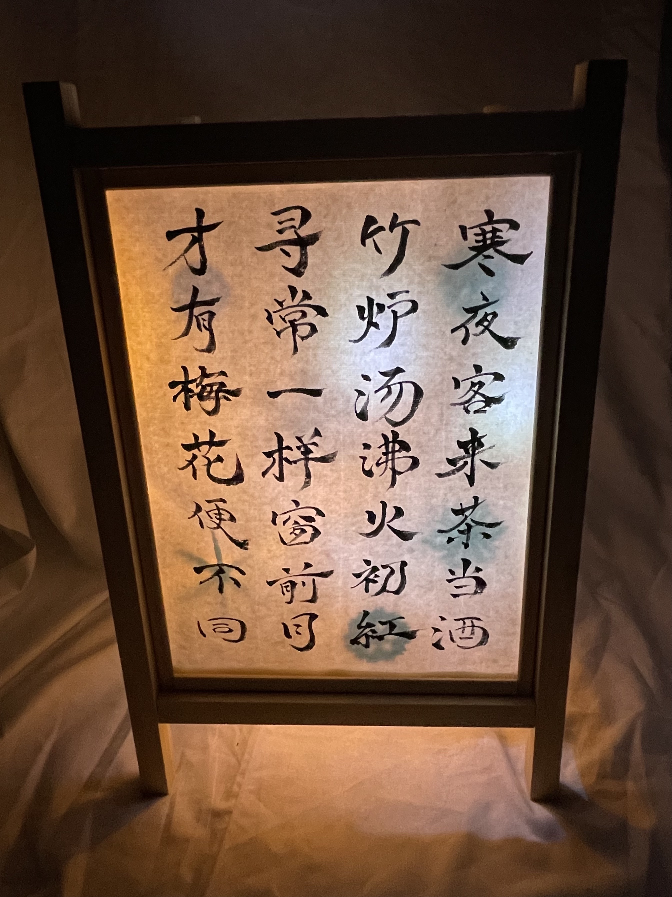

高2の作品
石川李桜
臨書『顔氏家廟碑』
顔真卿が父の惟貞の廟に建てた碑です。
肉太の線や、向かい合う縦画を互いに外側へふくらませた文字構え、さらに正方形に整えた概形によって、真正面を向いた、どっしりとしてゆるぎのない字姿となっています。 蚕の頭のように丸くなった起筆や燕の尾のような形をした右払いなども特徴的です。
創作

テーマは冬です。back numberの西藤公園という曲の歌詞を使って、書道アートに挑戦してみました。少し離れると、絵のように見える作品となっています。 下の赤い文字はマフラーを表していて、｢私は冬が好き｣と書いてあります。上の黒い文字は、ポニーテールの女の子の横顔を表していて、｢言葉が白く目に見えるから｣と書いてあります。
石田莉花
臨書『関戸本古今集』

名古屋の豪商・素封家関戸家に伝来する『古今和歌集』の零本。 関戸家所蔵の冊子本と諸家蔵の断簡数十点ほどが確認されている。 書写は11世紀後半で、伝称筆者は藤原行成。平安古筆の代表的遺品の一つ。
創作

秋の風物詩である｢紅葉｣をテーマにグラデーションの葉を貼り付け、葉が散っていく様子を表しました。 また、在原業平の『ちはやふる神代もきかず竜田川からくれなゐに水くくるとは』という和歌を添え、昔の竜田川でも紅葉が綺麗だったということを表現しました。
荻原璃世
臨書『始平公造像記』

龍門石窟寺を創建した比丘慧成が、その由来を述べ、始平公を供養するために造営しました。肉太で重厚な文字は鋭く角張りつつも悠然としていて、龍門様式の最たるものとされます。
創作『行灯』


- 
｢和｣の美しさで、見てくださった方に心を癒していただきたいと思い、行灯の落ち着きのある灯りと書を融合しました。春夏秋冬をそれぞれの面で表現し、俳句や漢詩に灯りを生かしたイラストを添えました。
中谷朱里
臨書『重之集』


三十六歌仙の一人源重之家集で、春・夏・秋・冬各二十首、恋・恨各十首が書かれている。 綴葉装の冊子本で、雲母を一面に撒いた淡い藍の打曇りのある料紙に、流麗な筆致で前半は歌を二行書き後半は散らし書きにしている。 後半部の百首歌だけが独立した形で書写されていて百首歌の初期のものとして貴重な存在となっている。
創作
冬から春に移り変わる様子を絵にしました。ただ桜の絵を描くのではなく、桜という文字を書き、桜の10画目を長めにして、山にまだ雪が残っている所に向かって春風を表しました。
仲地令薫
臨書『風信帖』

風信帖は、空海が最澄にあてた手紙3通を1巻の巻物として保存されたものです。中国の文化を取り入れ、堂々とした行書で書かれているのが特徴です。
創作
この作品は春夏秋冬の中から梅雨の時期に着目して創作しました。歌の意味は『紫陽花が夕べの空の色を羽織っているように藍色に咲いている』という意味で、学校帰りに咲いている紫陽花を表したものです。
藤田透子
臨書『蘭亭序』
王義之が永和九年に詩会（曲水の宴）を催し、その時の詩集の序文を揮毫されたもの。
全324字。力強さを感じる表情豊かな行書の美しさに惹かれ、この作品を選びました。
創作『四季と書』


それぞれの季節の代表的な花を背景に描き、それにあった和歌や百人一首を選びました。
季節ごとに色味や書の字体を変えたところに着目していただきたいです。